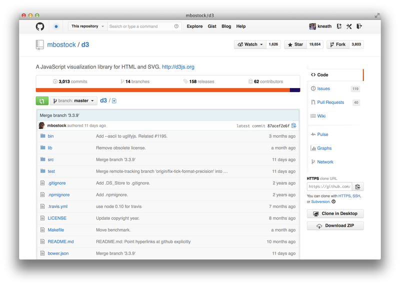
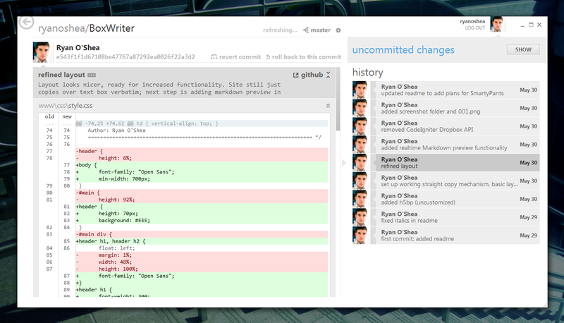

Il s'agit d'un site qui permet héberger et de gérer des projets. Il a également un logiciel complémentaire qui permet de rendre la gestion de données plus simple.
Ce site permet donc de gérer un projet, on peut crée des branches en plus de celle principale qui permet à chacun d'avancer dans sa partie et organiser le tout à la fin. Il permet de voir l'avancement de chacun sans avoir à contacter les autres développeurs
Voici les avantages de cet outil :
Il y a tout de même quelques inconvénients :
Voici quelques exemples de l'utilisation de github :
Premièrement voici comment s'organise la branche principale
Nous pouvons également voir les changements effectués par les autres développeurs.
Et enfin voici quelques commandes qu'il faut connaitre pour utiliser GitHub.